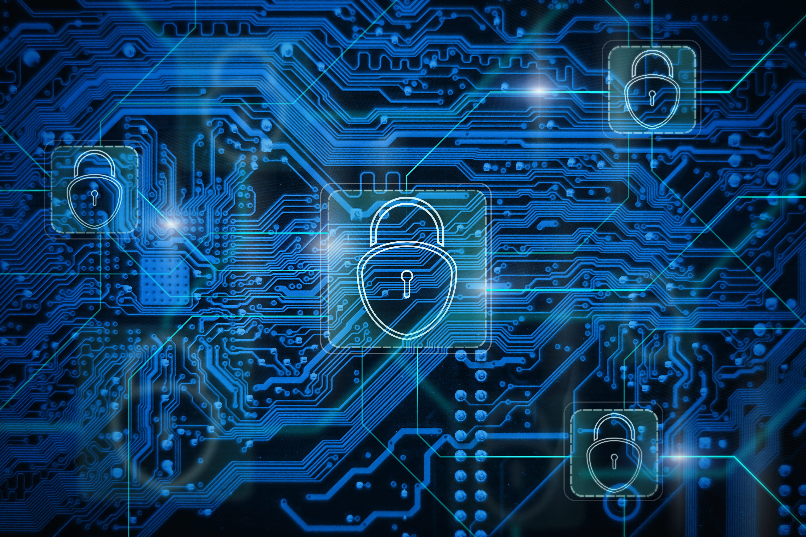

Learn more: CISA StopRansomware Guide
Ransomware: Should Organizations Pay the Ransom?
Keywords: Ransomware, Cybersecurity, Incident Response, Data Protection, Disaster Recovery, Risk Management
Ransomware is one of the most serious cybersecurity threats facing organizations today. It is a type of malicious software that can encrypt files or disrupt access to important systems. Attackers often demand money in exchange for restoring access to the affected data. These attacks can interrupt business operations, expose sensitive information, and create significant financial losses. Hospitals, schools, businesses, and government agencies can all become targets of ransomware attacks.
One of the most difficult decisions after a ransomware attack is whether an organization should pay the ransom. Although paying might seem like the fastest way to recover important files, there is no guarantee that attackers will provide a working decryption key. Even if files are recovered, attackers may have already stolen confidential information. Paying a ransom can also encourage additional criminal activity and may create legal or regulatory risks. For these reasons, organizations should consult cybersecurity professionals, legal advisers, and law enforcement before making recovery decisions.
The best defense against ransomware is preparation. Organizations should regularly update software, enable multi-factor authentication, and educate employees about phishing attacks. Maintaining secure, isolated, and regularly tested backups is especially important for recovering data without depending on attackers. Network segmentation and continuous security monitoring can also reduce the impact of an attack. A well-developed incident response plan helps organizations identify threats, isolate infected systems, and restore operations more effectively. In my opinion, investing in prevention and recovery planning is a better long-term strategy than relying on ransom payments.